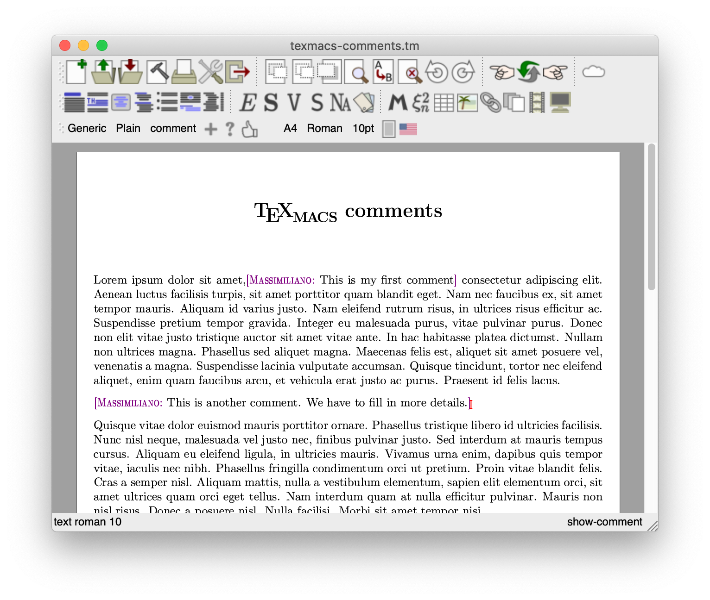
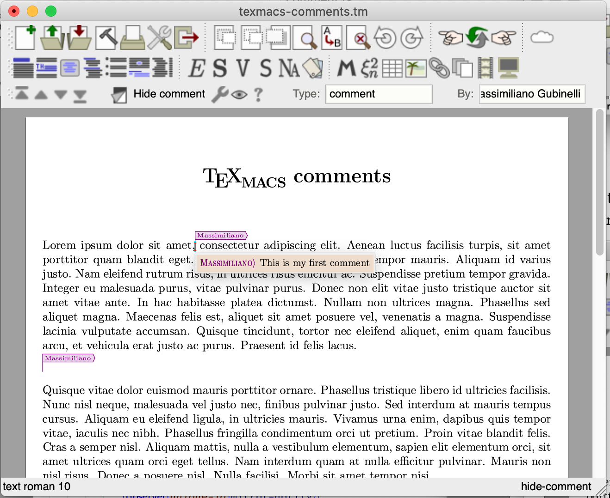
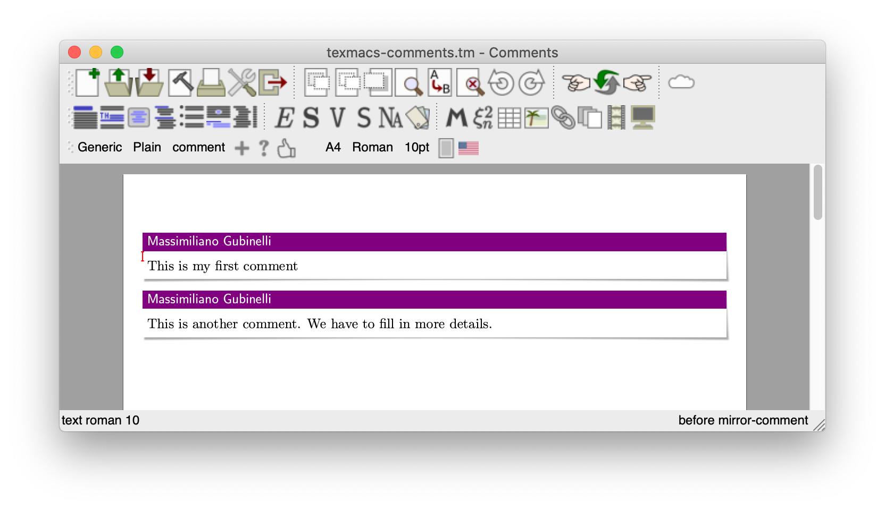

The basic idea is to have a markup element to insert comments in documents. There should be facilities to hide/show all comments and remove all comments. Hidden comments do not affect the typesetting of the document and are shown via a flag, but can still be read via balloons which opens as the cursor is nearby a comment.
Here's an example of a document with two comments:

and here the same document with both comments hidden, showing the balloon the user sees when the cursor is nearby an hidden comment (indicated by a flag, here shown in the “detailed” mode).

We discuss the implementation of the basic functionality: comment tags and commands to operate on them. The first thing is to create a new package which the user has to include in the document in order to activate this feature. The package can be found in . First we make sure that the appropriate menu is loaded as soon as the package become active. Menus are created and managed via Scheme code, so we load the scheme module which is found in the file :
The module contains several macros, but the main interface is provided by the and macros:
We will enter later into the specific details of the implementation. Both macros collect various arguments unique-id, mirror-id, type, by, time, body. While renders the comment body as part of the document, with an indication of the author, as provided by the argument by, the markup does not show up in the document directly since the evaluation of the associated macro results in a element together with the body of the comment inside an element. We will discuss later on the role of the which wraps the content in both cases.
The and elements provide the functional, descriptive side of the comment functionality. They are the “data structure” which encodes the comments. The scheme module give some classification of these two new elements:
A new group of tags is defined which contains both markup elements and they are declared as variants, and also as similar tags .
On the procedural side, the available actions on comments, is made available to the user at the level of the editor via a set of scheme procedure in the module. The procedure creates a new comment in the current-buffer and at the current position
Note the procedure, which insert a given markup and also move the cursor at the position , meaning the 6th child of the inserted subtree, i.e. the body of the comment (which is an empty string), and there in position , ready for the user to fill in the comment.
Basic operations on all the comments in a given document are provided by the following code
In the loop cycle over all comments and according to the selected operation, it either convert all the node label to or to , or in case , just remove the associated subtree, i.e. remove the comment and all its data. Note that the enumeration of all the relevant comment elements is operated by the function, which in turn uses defined as:
Finally, the functionalities are made available to the user via a menu and a shortcut in thanks to the code
which is loaded as soon as the package comment is used in the current document, as we have seen at the beginning of this article.
We want to allow the user to see all the comments together. This is implemented via a “virtual document” which is generated on the fly using TeXmacs file system () interface. In we find
The most important instruction here is the call to which defines an new type of resource within the TeXmacs file system . This introduces a new URI scheme tmfs://comments/name where name is the name of the specific buffer for which we request the comments. When the user try to access this URI the handler is invoked and it returns a new document containing all the comments of the original document collected and processed via . This procedure replace the comment element with an element of kind managing some additional metainformation in order to retrive the original comment within the document. Note also the user of and to set up various properties of the new comment URIs. The result is the following UI which appears to the uses as the command is inkoved:

The rendering of the markup is specified in the comment package, of course:
Ok, now things get serious. The actual implementation of require some low-level tinkering in the typesetter. This will be fixed (hopefully) in the future, in such a way that the behaviour of the markup can be controlled via DRD declarations in the stylesheet language. Unfortunately this is not yet the case and we have to modify the C++ code.
The most basic change is to describe the behaviour of the markup with respect to multi-paragraph material. In we have to modify the function as follows:
in particular note the line:
This in order to make override the default behaviour for non-primitive markup which is to return if all the arguments returns to .
We have also to modify :
and :
And finally